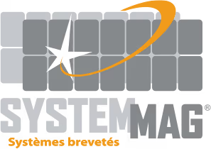
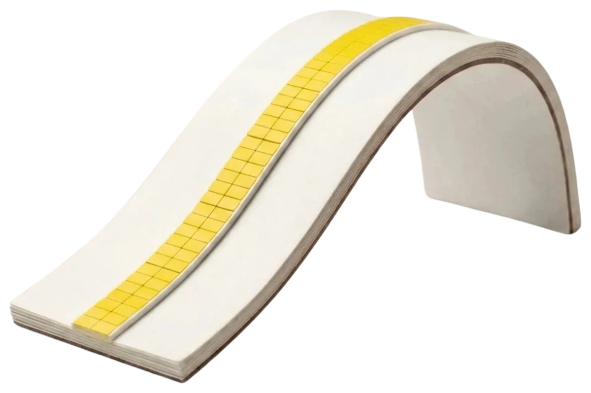
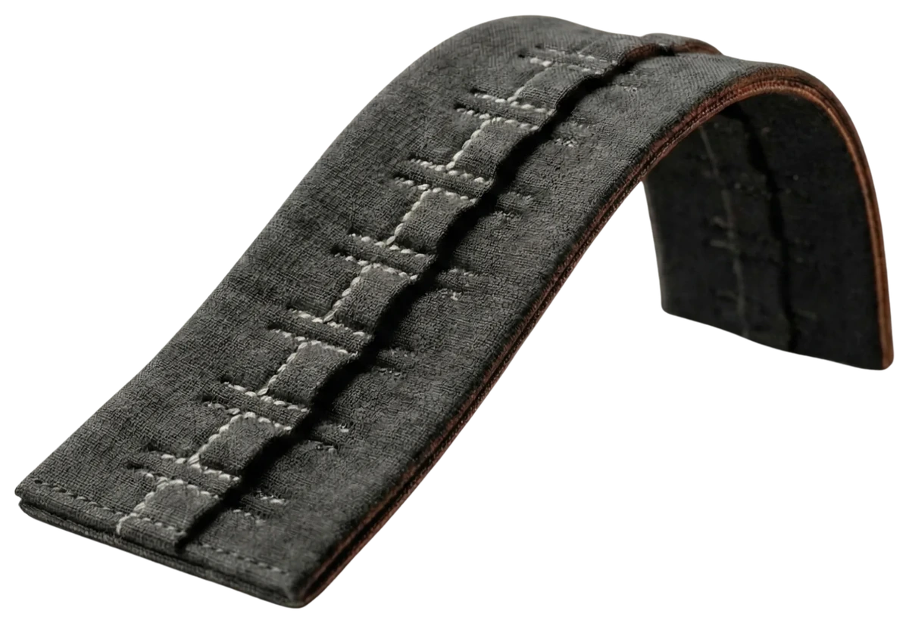
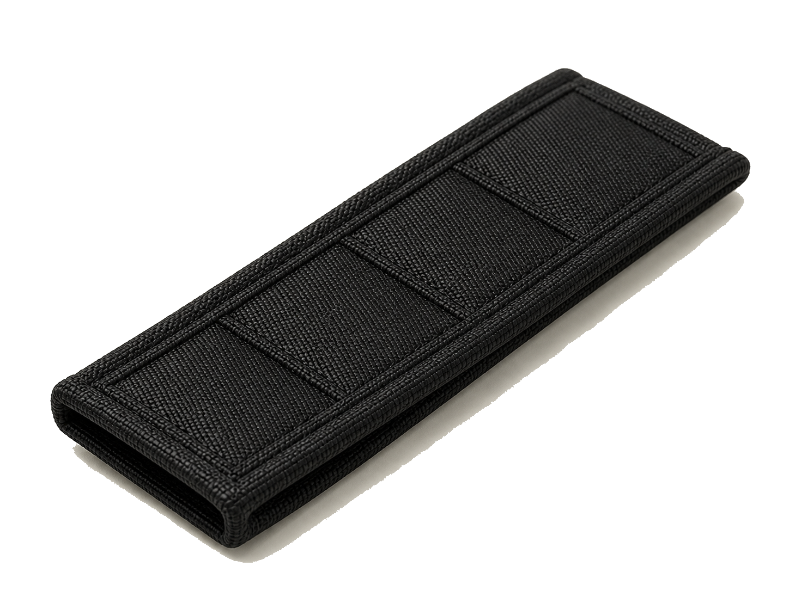
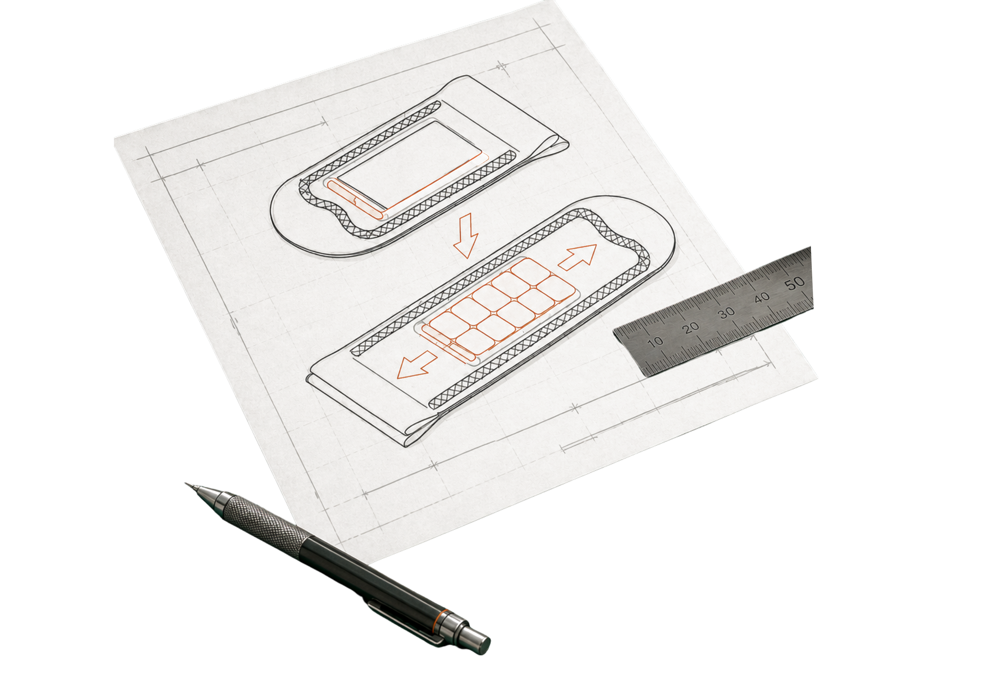
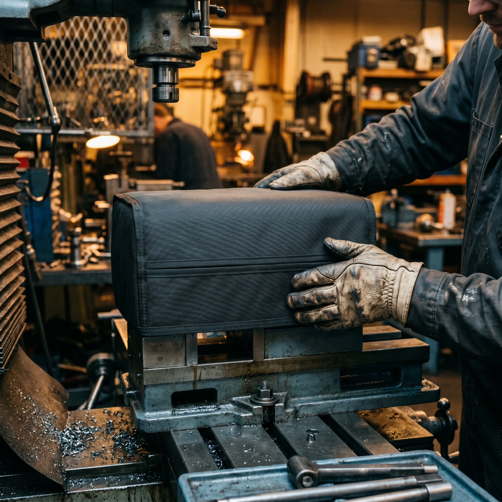

Positionner
Les modules compatibles se rapprochent et trouvent leur alignement.

Technologie brevetée pour textile et équipement
SYSTEMMAG conçoit des fermetures magnétiques intégrées aux textiles, accessoires et équipements techniques, avec un geste simple, une tenue fiable et une intégration prête pour vos contraintes.
Technologie en 4 gestes
Les polarités alternées guident la fermeture. Le maintien se répartit dans le textile, puis l’ouverture progresse naturellement par pelage.
Les modules compatibles se rapprochent et trouvent leur alignement.
La force se répartit dans la longueur pour rester discrète au porté.
Le module peut coulisser dans son fourreau pour régler le serrage.
Le geste de pelage libère les aimants progressivement.
Comment ça fonctionne
Les deux parties se rapprochent, se positionnent et s’attirent automatiquement grâce aux polarités alternées. L’ouverture se fait ensuite par pelage, aimant après aimant.

Deux bandes textiles s’approchent : les zones aimantées s’alignent poche à poche.

Un rabat se superpose partiellement sur l’autre le long de l’arête magnétique.

On soulève une extrémité et l’ouverture progresse avec un geste naturel.
Formats d’intégration
Fermetures linéaires pour vêtements, sacs et équipements, avec espacement et puissance ajustés au support.

Modules localisés pour créer des zones d’alignement, de maintien ou de réglage ponctuel.

Enveloppes prêtes à assembler, pensées pour protéger le module et contrôler le coulissement.

Base souple pour prototypage rapide et fermeture linéaire intégrée au textile.

Marchés
Froid, mouvement, gants ou couches techniques : un geste plus tolérant.
En savoir plusFaciliter l’habillage, l’accès et la manipulation sur textiles spécialisés.
En savoir plus
Intégration fiable sur housses, protections, supports épais ou pièces manipulées souvent.
En savoir plusRendre le geste plus simple quand la précision ou la force sont limitées.
En savoir plusDu prototype à la série

Usage, matière, effort utile et contraintes d’intégration.

Choix du module, de l’écartement, du grade d’aimant et du support.

Montage fonctionnel sur matière réelle pour tester le geste et la tenue.

Dimensions, nomenclature, pose, contrôle et accompagnement série.
Démarrer un projet
Décrivez votre support, votre usage et la contrainte à résoudre. Nous vous aidons à identifier le format le plus pertinent pour un premier prototype.